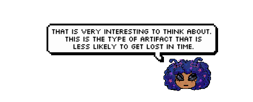
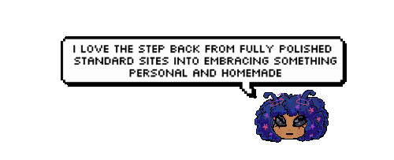

.gif) It seems we've landed!
It seems we've landed! It seems we've landed!

"The handmade web pages contained in this online archive continue to exist in the medium within which they were created. That said, the frames through which we view them continue to change."

"These are not artifacts of a dead web but rather, signposts on a map of a living web pointing to a web as it once was, a web in progress, a web in the making."
"I evoke the term 'handmade web' to suggest slowness and smallness as a forms of resistance."
